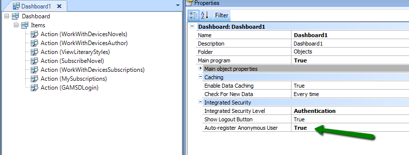

Auto-register anonymous user - SD usage example
This example describes the use of Auto-Register Anonymous Users for developing an application for the users of a library. Its main functionalities include: showing books, novels, etc. by different criteria (date published, author, etc.), keeping record of lists of favorites, read or to be read, receiving different notifications and buying books. The idea is also to obtain information on the user profiles for informing statistics referred, among other things, to reading habits, preferences, etc. Since applications that require a registry as the first step necessary are usually rejected, it was decided that the design would allow for all its functionalities to be totally anonymous (without registries) to the extent possible. Users must register only when it is absolutely necessary (such as in the case of purchases made). The design guideline "anonymous user to the largest extent possible" implies a number of technical challenges. How could non-registered users subscribe to "monthly news", for example? or What or who is to be considered the subscriber? The following example is based on the fact that the application will have, whenever necessary, access to a GeneXus Access Manager user identifier. The use of Auto-register anonymous user will guarantee this possibility. Developing the solution
The first object in the application will be a dashboard with True value for Main program property (Main Dashboard), where different Action Items are defined to call each object in the application.
Note that the user is identified in the transaction with the GAMUserGUID attribute of the GAMGUID type.
The "SubscribeNovel" object is invoked from the application’s main menu (Dashboard1 object) shown below. 
Note that the value of Auto-Register Anonymous User Property in the dashboard object is True, to accept the access of "anonymous" users to the various options in the dashboard and the objects in the calls tree of such options.
When the auto-registered user accesses the "SubscribeNovel" option, a record is created for that user in the GAM’s user table, with an assigned GUID. To put it in other words, in the case of a SD panel with query regarding the subscriptions of the logged in user, the preferences declared by the anonymous user prior to registration will be the ones shown for the user registered. We can see below how to view the user subscriptions. Supposing that we have a SD panel called "MySubscriptions" like the one below, which loads on a grid the subscriptions of the user logged in.
Note that the grid has the "Authorized" value associated in the DataSelector property. It is a DataSelector containing a condition for filtering only the logged in users (see image below), GAMUserGUID = GetUser()
where GAMUserGUID is one of the grid’s columns (the objective is to filter by that attribute). &GamuserGUID = GAMUser.GetId()
NoteThere are different ways for identifying the user that is logged in (see GAM API: How to reference GAM users). Considering that users may access as anonymous, the most appropriate way is to obtain their GUID.
|

| Backlinks | |
| Auto-register anonymous user - How it works | Auto-register anonymous user - How to identify auto-registered users |
| Auto-Register Anonymous Users | Toc:Native Mobile Applications Development |